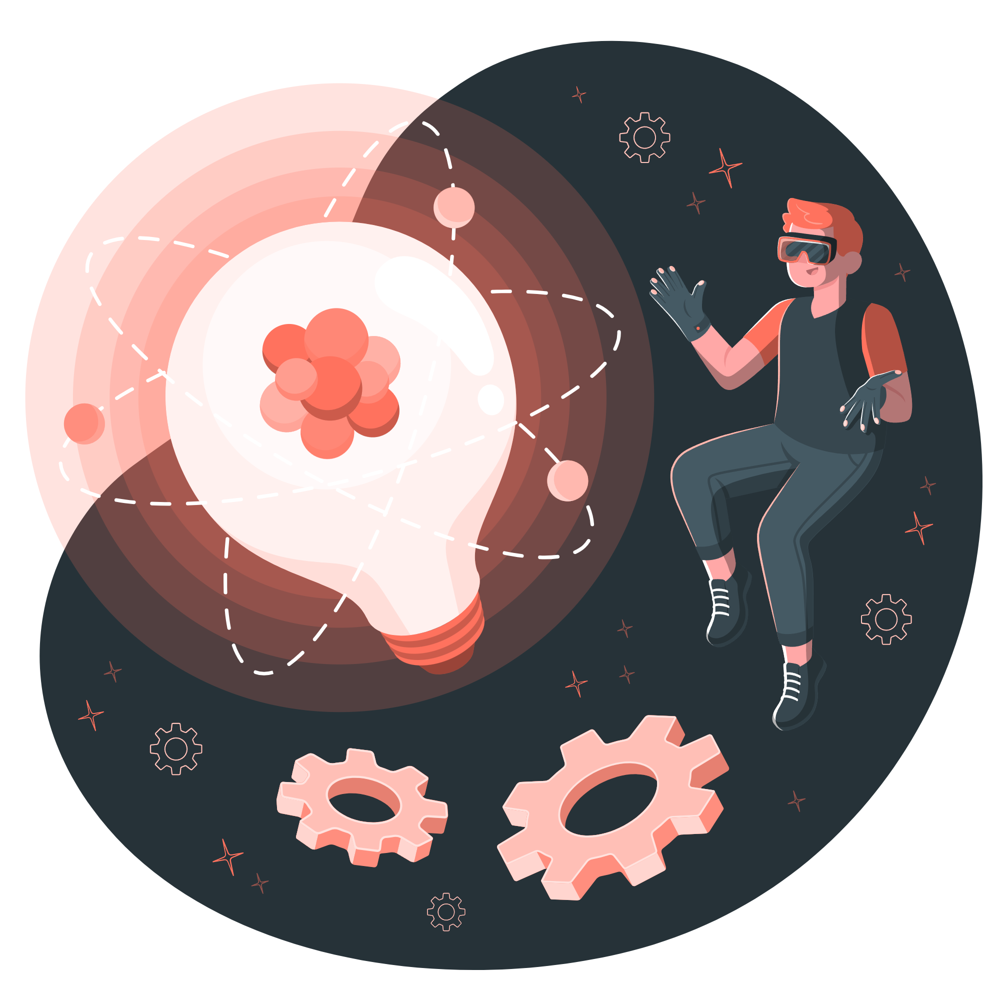

UNIDOS POR

saber mas
Los Objetivos de Desarrollo Sostenible (ODS), también conocidos como Objetivos Globales, fueron adoptados por las Naciones Unidas en 2015 como un llamamiento universal para poner fin a la pobreza, proteger el planeta y garantizar que para el 2030 todas las personas disfruten de paz y prosperidad.
En un contexto donde la responsabilidad social y ambiental se vuelve fundamental, alinear la estrategia mundial con los ODS no solo refuerza la posición ética de todos, sino que también ayuda a las personas a asegurar su propia sostenibilidad a largo plazo, posicionándose como líderes comprometidos con un futuro más justo y equitativo.
“Los ODS son nuestra hoja de ruta hacia un
futuro sostenible”